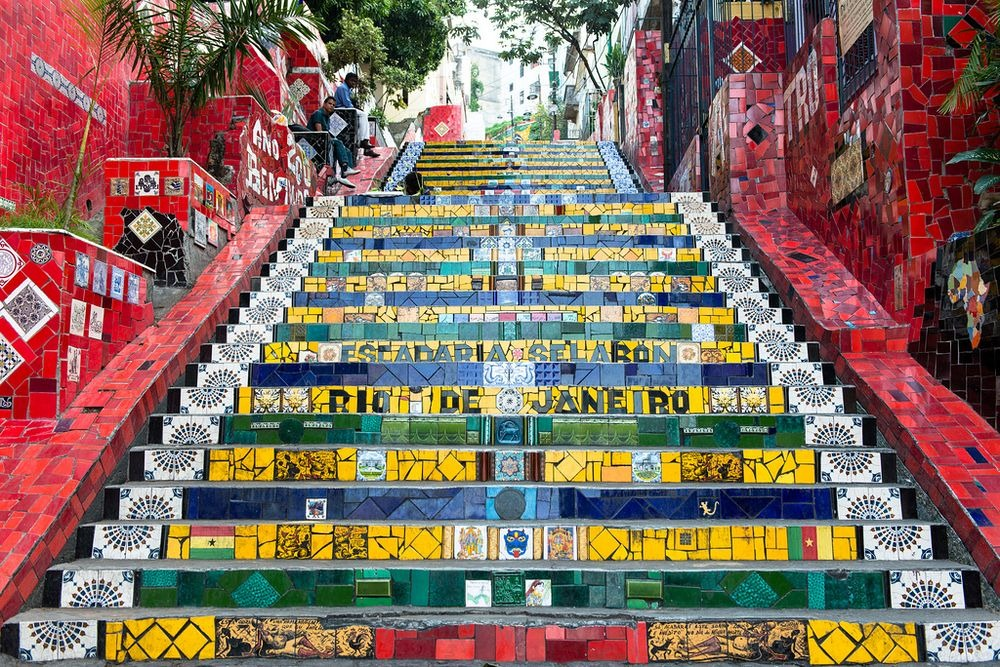
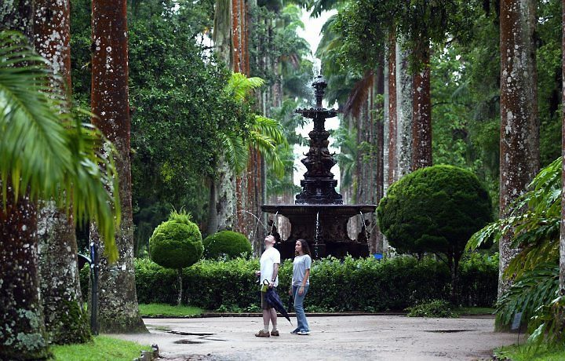

Ipanema Beach
Ipanema is a famous beach located in the southern zone of Rio de
Janeiro, Brazil. With its golden sands and breathtaking views, it is
a popular destination for sunbathers and beach lovers. The beach is
known for its vibrant atmosphere, relaxed lifestyle, and fashion
scenes. Ipanema also offers a variety of kiosks, bars, and
beachfront restaurants. It is free and open to the public to enjoy a
day in the sun and the ocean.
Christ the Redeemer
The Corcovado Mountain, in Rio de Janeiro, Brazil, is famous for
housing the iconic Christ the Redeemer statue. Standing at 30 meters
tall, the statue is a symbol of faith and beauty. Access to the top
is possible through a staircase or a train, which provides
facilities for people with reduced mobility, making the site
accessible to all visitors. From the top, one can enjoy the
breathtaking cityscape, making Corcovado Mountain and Christ the
Redeemer inclusive and incredible tourist destinations.
Selarón Steps

The Selarón Steps is an iconic artwork located in the neighborhood
of Santa Teresa, Rio de Janeiro, Brazil. Created by the Chilean
artist Jorge Selarón, the staircase is a stunning installation
comprised of over 200 steps covered in colorful and unique tiles
collected from different parts of the world. Selarón's work started
as a tribute to the Brazilian people but over the years evolved into
a global collaboration, with people from all around the world
contributing tiles to the staircase. The Selarón Steps have become a
popular tourist attraction and a vibrant symbol of Rio de Janeiro's
cultural and artistic diversity.
Botanical Garden

The Botanical Garden is a charming destination located in Rio de
Janeiro, Brazil. Established in 1808, it is one of the oldest
botanical gardens in the country. Spanning approximately 54
hectares, it houses a rich variety of plants, trees, and flowers,
including exotic and native species of Brazilian flora. In addition
to its natural beauty, the garden also features a palace, trails,
and a lake, providing a peaceful and serene environment for
strolling and relaxation. The Botanical Garden is a botanical and
cultural haven, ideal for nature lovers and biodiversity
enthusiasts.